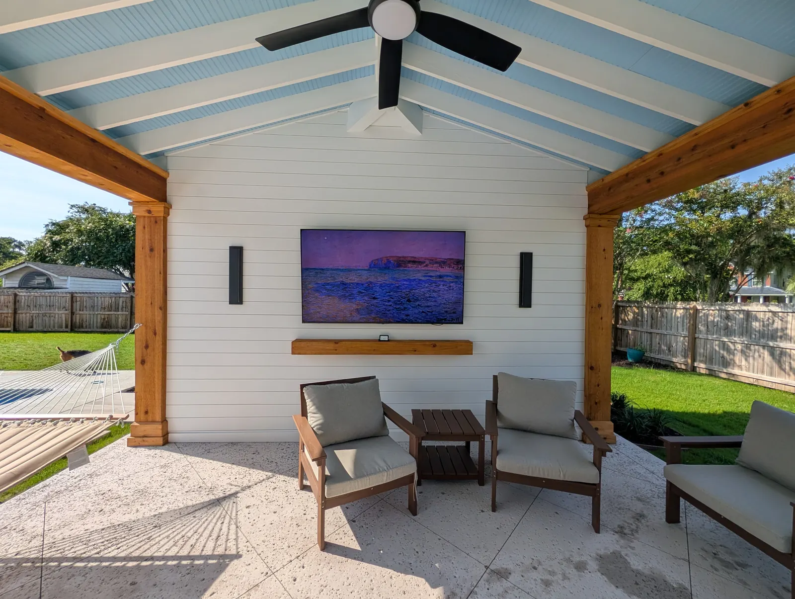
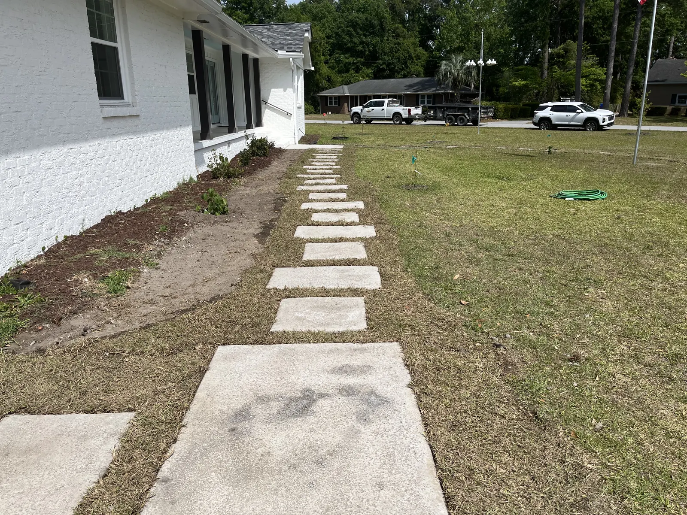
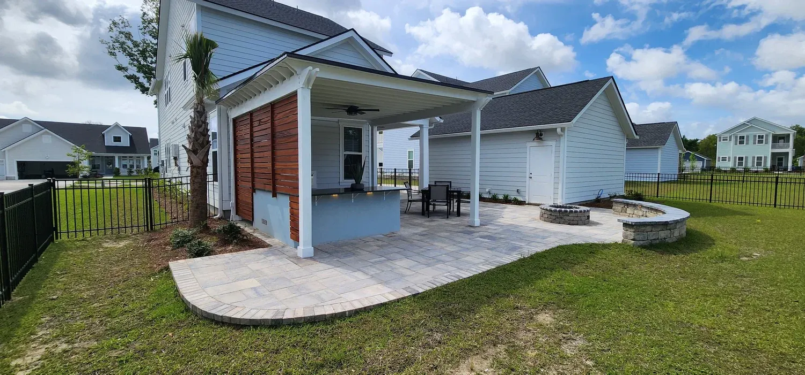
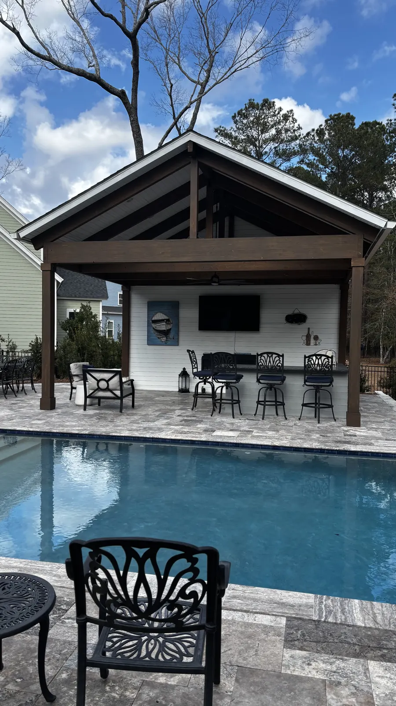
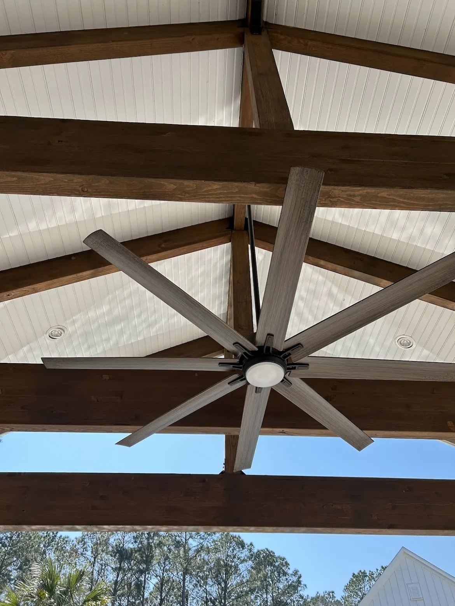

Why Cramers Landscaping Is Charleston’s Top Landscaping Company
Charleston, South Carolina, has no shortage of beautiful landscapes - from centuries-old live oaks draped in Spanish moss to perfectly manicured courtyards tucked behind historic iron gates. But maintaining that charm takes more than just green thumbs. It takes expertise, consistency, and a deep understanding of the Lowcountry itself.
That’s where Cramers Landscaping comes in - the trusted name in professional landscape design, installation, and maintenance throughout Charleston and the surrounding areas.
Locally owned, family-operated, and built on values that never go out of style, Cramers Landscaping has become known as one of the top landscaping companies in Charleston SC. Here’s why.
About Cramers Landscaping

Cramers Landscaping is proud to be the Lowcountry’s trusted name in landscape design, installation, and maintenance. Family-owned and operated right here in Charleston, the company has built its reputation on honest communication, skilled craftsmanship, and a true commitment to helping clients bring their outdoor visions to life.
From the very first consultation to the final layer of mulch, every detail matters - and every client matters. That attention to care, detail, and long-term results is what makes Cramers stand out in a competitive market.
A Family Company with Deep Local Roots
When you work with Cramers Landscaping, you’re not hiring a big-box contractor - you’re partnering with a local family. Zach and Doug Cramer, the father-son duo behind the company, are lifelong Lowcountry residents. They understand Charleston’s climate, its soil, and its unique architectural style - but more importantly, they understand the community.
That local connection means every project is approached with pride and accountability. When the Cramer team transforms a backyard in Mount Pleasant or revitalizes a courtyard in downtown Charleston, it’s personal. They’re improving the very neighborhoods they call home.
This family-first mindset also defines their customer experience: approachable, transparent, and rooted in genuine care.
Why Cramers Landscaping Is the Best in the Lowcountry

At Cramers Landscaping, every project is treated like it’s for their own home. The team carries their family values into every relationship - honesty, clear communication, and craftsmanship above all else.
They believe that great landscapes aren’t built overnight. They’re built with vision, planning, and a long-term perspective. Whether a client wants to design a backyard retreat, install hardscapes that double as entertainment spaces, or simply maintain their existing property, Cramers takes time to understand the full picture - how today’s work will evolve into tomorrow’s goals.
That’s why their projects feel cohesive and lasting. Each phase, from irrigation systems and plantings to patios, pergolas, and pathways, fits seamlessly together.
The Cramers Promise
Through open communication and detailed planning, Cramers Landscaping guarantees results that are not only beautiful but also built to last. Their work is never about quick fixes or shortcuts - it’s about creating timeless outdoor environments that thrive in Charleston’s demanding coastal climate.
From drainage systems to tree trimming, every service is handled with precision and purpose. Their philosophy is simple: landscaping should add long-term value - not short-term stress.
A Full-Service Landscaping Partner

Cramers Landscaping offers a wide range of professional services to meet every outdoor need. Their team handles the entire process, from design and construction to maintenance and enhancement.
Their expertise includes:
- Landscape Installation – From native plantings to turf and trees, every element is selected for Charleston’s climate.
- Hardscape Installation – Patios, pavers, retaining walls, and outdoor kitchens that combine functionality and style.
- Irrigation Installation & Maintenance – Efficient, custom systems designed for Charleston’s rainfall patterns and coastal soil.
- Landscape Enhancements & Design – Transform existing spaces with new beds, edging, and seasonal color.
- Tree & Shrub Trimming – Professional pruning that promotes healthy growth and lasting structure.
- Grading & Drainage Solutions – Solve common Lowcountry flooding and erosion challenges.
- Pergolas, Fencing & Site Structures – Elegant outdoor features that extend livable space and boost property value.
This wide scope allows clients to partner with one trusted team for everything - from the first concept sketch to ongoing care year after year.
Integrity, Communication, Craftsmanship, Adaptability
Every company claims to have values, but at Cramers Landscaping, those values show up in every project.
Integrity:
They believe in doing what’s right - even when no one’s watching. Each project is completed to the highest standards, with no shortcuts or compromises.
Communication:
You’ll always know where your project stands. Cramers keeps clients informed at every stage, offering full transparency and responsiveness.
Craftsmanship:
The team doesn’t settle for “good enough.” Whether it’s installing lighting, building retaining walls, or maintaining a lawn, their work is defined by precision and pride.
Adaptability:
Landscapes evolve over time - and Cramers plans for that. They create flexible, scalable outdoor spaces that grow with your property and your family.
Serving the Greater Charleston Area

Cramers Landscaping proudly serves both residential and commercial clients throughout the Charleston metro area, including:
Charleston, Mount Pleasant, Summerville, Johns Island, Daniel Island, Isle of Palms, West Ashley, Sullivan’s Island, North Charleston, Folly Beach, James Island, and Kiawah Island.
Whether it’s a historic downtown home, a marshfront property, or a new build in Mount Pleasant, their designs reflect the natural beauty and timeless character of the Lowcountry.
The Cramer Family Difference
What truly separates Cramers from other landscaping companies in Charleston SC is the people behind the name.
For Zach and Doug, landscaping is more than a business - it’s a legacy. They’re hands-on owners who visit job sites, talk directly with clients, and ensure that every project upholds their family’s standards.
That kind of leadership shows. The crew members are professional, courteous, and deeply invested in the outcome of each job. The result? A company culture where accountability and pride drive every detail.
Built for Charleston’s Coastal Conditions
The Lowcountry’s beauty comes with unique challenges - sandy soils, salty air, humidity, and heavy rain. Cramers Landscaping designs and installs with those realities in mind.
Their irrigation systems are customized for water efficiency. Their retaining walls and hardscapes are engineered for drainage and stability. Their plant selections are chosen to thrive in Charleston’s microclimates, from downtown’s shaded courtyards to the windswept dunes of Isle of Palms.
That’s why homeowners across Charleston County say Cramers Landscaping doesn’t just build landscapes - they build landscapes that last.
A Commitment to Long-Term Care

Cramers Landscaping believes their relationship with clients shouldn’t end after installation. Maintenance is the foundation of every healthy landscape.
Through regular service plans - including mulching, bed maintenance, pruning, and irrigation upkeep - they ensure your property continues to look just as good years after installation as it did the day it was finished.
Their team treats ongoing maintenance as a partnership, not a transaction - always keeping clients informed about how to best care for their investment.
Sustainability with Purpose
As Charleston continues to grow, sustainable landscaping has become more important than ever. Cramers integrates eco-conscious practices into every project, from native plantings that reduce water use to efficient low-voltage lighting and erosion control systems.
Their goal isn’t just to make properties beautiful - it’s to make them environmentally responsible and resilient against Charleston’s coastal challenges.
What Clients Say
Cramers Landscaping’s success has been built largely through referrals and repeat customers - a testament to their consistent quality and service. Homeowners often describe them as “easy to work with,” “detail-oriented,” and “reliable.”
They’ve helped countless clients turn average yards into functional, stunning outdoor spaces that enhance property value and daily life alike.
Our Mission: Landscapes That Last a Lifetime
The Cramers team strives to constantly learn, grow, and deliver the best possible landscaping experience. Success, to them, isn’t measured by the number of projects completed - it’s measured by the relationships built and the lasting value created for every client.
Every service, every product, and every plan is approached with long-term durability, functionality, and beauty in mind.
When you hire Cramers Landscaping, you’re not just getting a service provider - you’re gaining a trusted outdoor partner.
Ready to Transform Your Charleston Landscape?
If you’re looking for a team that combines expertise, integrity, and genuine care for your property, Cramers Landscaping is the Lowcountry’s top choice.
Call 843-614-9773 or visit CramersLandscaping.com to schedule your free consultation today.
Whether it’s designing a new landscape, refreshing an existing yard, or building an outdoor retreat that fits your lifestyle, Cramers Landscaping delivers Charleston craftsmanship at its finest.
Planning a Project of Your Own?
See everything we design and build, or get in touch to talk through your ideas with Doug and Zach.